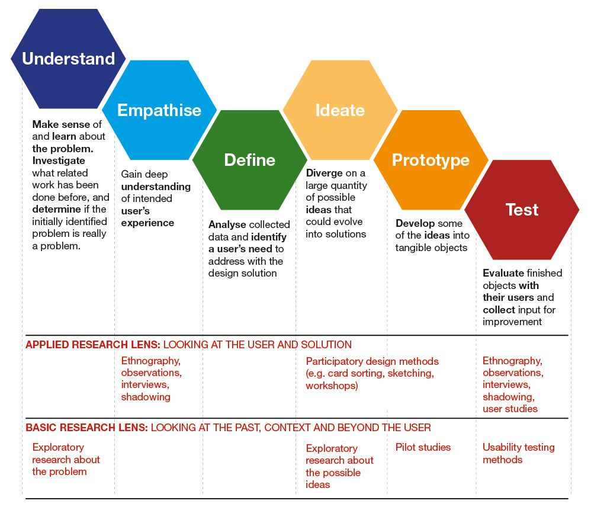

{kind=link}
Lecturers:
Jessy van Os
Kristel Kerstens
Assignment:
Portfolio
19 pages
Conditional:
1 cover
1 logo
This course is the first design course followed by many others in the UXD program. With this course I have successfully been able to:
• explore my own creativity and further develop my creativity.
• get introduced to the design process.
• practice various creative techniques of diverging, converging and iterating that I can use in this design process later on.
• practice different visualizing techniques to communicate ideas, concepts and
messages.
• learn about 5 steps of Design Thinking Process.
For this course, I built a portfolio with 19 assignments. Those assignments include drawing, writting, photos with descriptions and also designing. Some assignments were made during class, some with third-year students, other assignments were made in self-study hours.
What I learnt:
5 steps of Design Thinking Process
The Design Thinking process first defines the problem and then implements the solutions, always with the needs of the user demographic at the core of concept development. At the core of this process is a bias towards action and creation: by creating and testing something, you can continue to learn and improve upon your initial ideas.

Showcase
These are some assignments that I have done (storyboard, diverging & converging ideas, CV, sketchnote, ...). They are all based on 5 steps of Design Thinking Process, which every designer needs to know.
I happily got the score of 9.2 overall in the end. The course, exactly as its name, has helped me a lot with my skills and thinkings for design so that I can finish many things perfectly, following with plenty of projects.